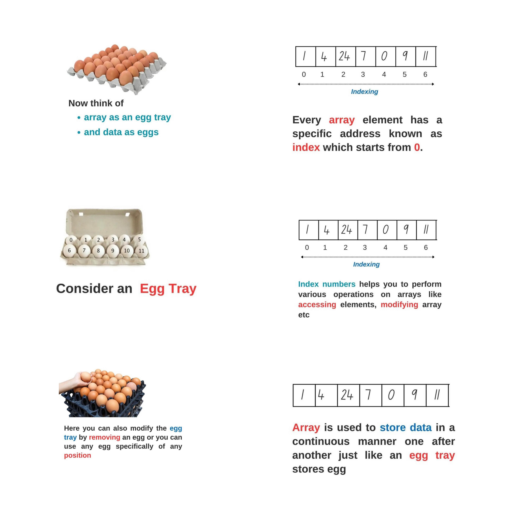
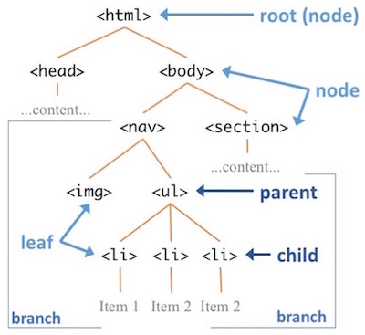

A function is a block of code that performs a specific task under a one name. You can divide this task in a small chunks and use these chunks when you need them. Function makes the code reusable. You can declare it once and use it multiple times.
function´s statement/body: is written within { }, this is a set of instructions , small chuncks
function´s declaration: use
function keyword
function´s expression: F.NAME( )
f.parameters: we define them inside ( ) when we declare function is like a placeholder til data, that defines what should be passed to this function.
f.arguments: variables, that pass into parameters when function is called ( are passed to the function procedure); they are accessible only within this function.
Functions types
standard function
function without parameters
function expression without name
function expression with name
wyrazenie funkyjne tzn przpisanie do variable funkcji
ARRAY [ ]: special type of object coz can contain a mix of different data types fx:string with numbers and boolean
array's index starts with 0, not 1. --> II array with mixed data types: const arrayOne = ['work', 'exercise', 1, true];

Method
to funkcja w obiekcie. Jest przypisana do tego obiektu jako jestgo wlasnosc i wlasciwosc (properties),
przetwarza jego dane i moze byc wywolana tylko wewnatrz swojego obiektu (is a function within an object, assigned to this object as its own , process object´s data and can be called within this object;)
scope: availbility of variables in a certain part of code
global scope: a variable declared at the top of a program or outside of a function , it means this variable can be used anywhere in the program: the value of a global variable can be changed inside a function ----> good practice: avoid using global variables because the value of a global variable can change in different areas in the program. It can introduce unknown results.
local scope: a variable declared within a function,can only be accessed within the function! (not beyond the function)
Data types
string, number, boolean (true /false) ,undefined, null, symbol, object --> all data except object are primitive data-type it means can store only a single data; fx: const age = 28, ; let greet = 'Say Hi', let study : true,
Eventlistener
Event: is a methode
we use it to attach an event to a particular element
when event happens fx user interaction like a click , triggers a specific section of the code
syntax: element.addEventListener (event, function, useCapture);useCapture is optional
are the methodes that are called on the DOM to select/return one/more of elements represented in the DOM query. the returrnered element is then free to be used by a programming language.
querySelector lægge i vores RAM; querySelector --> returnerrer en Node; querySelectorALL --> returnerrer flere Nodes
script need to be able to access the content of document and to know when the user is interacting with it. This communication is carried out with help of methodes, events, propertires in the interface called DOM :)
DOM: Document Object Model
is a nodes tre-like representation of HTML Doc (markup-based resource) loded in browser.The DOM is an API for accessing and manipulating documents what allows me to interact with a website using js
DOM renders the page (HTML: text from editor) in the browser as a tree of objects so that java script, can play with it. In other words when the static assets (HTML and CSS) are loaded on the site - the DOM is created - and js sees the TREE! which allows js ( and any scripts) to run on that page manipulating not the HTML and CSS , but the browser’s interpretation of that information (the DOM)
is representation of whole HTML elements that make up web page (are loaded in browser)
it´s a root element;
with help of DOM we can add dynamic content to a webpage - we can access & change the content of doc. by its methodes (doc. is root element thet represents HTML doc.)

js widzi tak strukture elementów html na wczytanej stronie - oczami Javy S. ha ha! To, co sobie pisze tzn. tekst w HTMLu w edytorze , zostaje nastepnie przedstawione w postaci modelu obiektowego pamieci komp. czyli przegladarka czyta sobie moj tekst i odpowiednio przetwarza go na drzewko.
DOM Properties
node value
--> if text nodes
text content
--> element nodes like fx.H1-H6, p,em; counter example
-->querySelector (): this method returns the first element within the document that matches the selector. It returns a single element.
-->querySelectorALL (): returns a nodelist thus the list of the document’s elements that match the given selector(s). Can return one or many selectors.
querySelect vs querySelectAll
Conditional Statements
if -- else if -- else => these conditi ons determine whether or not pieces of code run og action happens ; happens if a specified condition is true
returns: true === or false !==
&& all conditions must meet
II one condition is enough to statement work
if-else if --> if there are few statements , only one blok will be executed coz js checks conditions sequentially and the first one that meets requrements will be exectued
Conditional (ternary) operator (this operator is frequently used as an alternative to an if...else statement): condition? if true : if false
Loops
are used to repeat a block of code. For example, if you want to show a message 100 times.
How it works? If the condition is false, the for loop is terminated.
If the condition is true, the block of code inside of the for loop is executed.
loop is en event
for
for...in
for.. of
for... each
while
do... while
i = means index , it´s a loops variable
() inside is: i value , condition, iteration: i++ or i-- /p>
i++ (increment operator): i++ evaluates to the previous value of i , and then i increases the value of the variable with 1. Makes sure the loop ends at some point.
Difference between loop for & loop while
for
while
when the number of iterations is known ahead of time = precise n times and loop stops --rigid syntax.
best when you don't know the number of iterations ahead of time. Loops are executed as long as the expression evaluates to true. -- looser syntax-- Warning: Infinite while Loop (means troubles): if the condition of a loop is always true, the loop runs for infinite times (until the memory is full).
for
to execute code repeatedly
The for loop requires following three parts:
Initializer: Initialize a counter variable to start with
Condition: specify a condition that must evaluate to true for next iteration
Iteration: increase or decrease counter
syntax: for(initializer; condition; iteration) { Code to be executed } -->Ex: for(count=1; count < 10; count++) {
console.log(count);
}
Difference between loop for...in & for...of: both loops can be used with Arrays and Strings
for (...in)
for(...of)
loop over the enumerable properties of an object
only for...of loops iterate over the values in order
for (...in)
syntax: for (variable in object) {
// statements
}
iterates through the properties of an object; each iteration returns a key (x)). The key is used to access the value of the person[x]
does not loop through all of the properties of the object. Only through the enumerable properties such as user-defined or inherited user-defined.
Break Statement :yes
for (...of)
--> loops through an array and also sets, maps, strings
syntax: for every element in the object, run the body of the loop: for (element of object) { // body of for...of };
for (...each)
execute the code once for every element found in the array
contains a for each method, this means that on any array, we can call forEach so
while
--> rybki w akwarium; stops completely the current loop & goes to the next one ex. 1 2 3 4 NO5 6 7 8 9 / can use break condition
do while
first is DO, then is WHILE ... it evaluates condition expression after the execution of code block that´s why it will run at least one time , even the condition is false; similiar to while loop. Ex: let i = 0 ; while (i<0) --> it will go anyway one time.